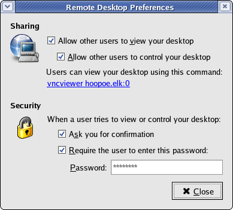

Виртуализация рабочего стола с помощью VNC
Тим Уоф (Tim Waugh)
This article is protected by the Open Publication License, V1.0 or later.Copyright © 2005 by Red Hat, Inc.
Original article: http://www.redhat.com/magazine/006apr05/features/vnc/
Перевод: © Иван Песин
- Введение
- Применения VNC
- Настройка постоянного рабочего стола
- Использование VNC-клиента
- Быстрые шаги
- Дальнейшее чтение
- Об авторе
Введение
Каждый день, заканчивая работу, я выключаю свой рабочий компьютер. Когда на следующий день я включаю его опять, я могу продолжить работу с того же момента, на котором остановился. Я включаю компьютер и вижу приложения, запущенные еще вчера. Веб-браузер находится на недочитанной мною странице. Каким образом? Я использую VNC: Virtual Network Computing.
Моя сессия рабочего стола фактически запущена на компьютере, который находится в другом здании. На компьютере, за которым сижу я, запущен VNC-клиент, который показывает мне мой рабочий стол, а сами приложения запускаются в сессии на VNC-сервере.
Применения VNC
Существуют несколько различных проблем, которые могут быть решены использованием VNC. Причина, по которой использую его я — описанный выше постоянный рабочий стол. Это одна из наиболее распространенных причин использования VNC. Один компьютер выполняет процесс VNC-сервера, который представляет собой вариант виртуального фреймбуфера: он управляет экранным изображением (двухмерным массивом пикселей), но не выводит его непосредственно на монитор. Другой компьютер выполняет процесс VNC-клиента, который получает изображение фрейм-буфера от VNC-сервера и выводит его на настоящий экран. Работая с рабочим столом при помощи VNC у меня нет необходимости постоянно регистрироваться в системе и выходить из нее, я просто продолжаю сессию с того момента, где закончил в прошлый раз.
VNC-сервер и клиент доступны для многих операционных систем. Red Hat® Enterprise Linux® 4 включает сервер и два клиента: обычный и Java-версию. VNC-сервер может быть настроен на предоставление доступа по HTTP, так что для доступа к нему вы можете использовать любой веб-браузер с поддержкой Java.
Дизайн VNC предъявляет мало требований к VNC-клиенту. Большая часть работы выполняется на сервере. В результате, это очень подходящая технология для организации тонких клиентов (когда много бездисковых машин предоставляют графический интерфейс к одному мощному серверу). Тонкий клиент должен выполнять только процесс VNC-клиента, тогда как приложения могут находиться на сервере.
Одним типом тонкого клиента является X-терминал: выделенная машина, подключенная к сети, на которой выполняется X Window System. В общем, эти машины настроены на подключение к серверу, который обеспечивает регистрацию и работу в системе. X-терминал отображает графику сервера с помощью протокола X Window System.
Клиент VNC может работать как программный X-терминал к серверу VNC, предоставляющему окно регистрации в системе. Преимущество использования VNC состоит в том, что сессия не закончится, даже если пользователь отключит VNC-клиент, перейдет в другую комнату или здание, и снова подключится к VNC.
Еще одно применение VNC — это удаленный контроль или просмотр экрана. Несколько способов реализации такого сценария включены в Red Hat Enterprise Linux 4. Самый простой — это использование из меню -> . Чтобы разрешить управление или просмотр вашей рабочей сессии, отметьте пункты Allow other users to view your desktop (разрешить другим пользователям видеть ваш рабочий стол) и Allow other users to control your desktop (разрешить другим пользователям контроллировать ваш рабочий стол). В этом же диалоге вы можете установить пароль для доступа к VNC и указать на необходимость вашего разрешения при подключении удаленного VNC-клиента.

Менее простой, но более эффективный способ реализации такой же функциональности состоит в использовании загружаемого модуля VNC для X Window System. Инструкции по его настройке приведены на сайте RealVNC. При использовании этого модуля, можно просматривать и управлять экраном, даже если никто не зарегистрирован в системе.
В Red Hat Enterprise Linux 4 VNC может сильно помочь вам даже при установке операционной системы! Вы, наверно, знаете, что есть возможность выполнять автоматические инсталляции с помощью kickstart, когда все параметры и наборы пакетов заранее заданы в конфигурационном файле kickstart. Но знаете ли вы, что можно получить интерактивный контроль над процессом установки Red Hat Enterprise Linux, даже когда машина, на которую устанавливается система, физически находится далеко от вас, возможно в другой стране.
Машине, на которой устанавливается Red Hat Enterprise
Linux, можно сказать, чтобы она работала как VNC-сервер с
самого начала процесса установки. Если коротко, то для этого
нужно загрузить систему с помощью PXE (или аналогичным
способом), передав инсталлятору строку linux
ks vnc (ссылки на документацию по сетевой установке с
помощью PXE
можно найти в разделе "Дальнейшее чтение").
При помощи DHCP указать на минимальный конфигурационный
файл kickstart, который содержит лишь местонахождение
дистрибутива — как правило, сервера NFS. Теперь,
когда
загрузится инсталлятор, вы сможете подключиться к этой машине клиентом
VNC, указав ее IP-адрес.
Настройка постоянного рабочего стола
Ниже приводится описание шагов, необходимых для настройки постоянного рабочего стола с помощью VNC в Red Hat Enterprise Linux 4.
Первым делом следует установить пароль
на VNC-сервере. Для этого зарегистрируйтесь в системе и
выполните команду vncpasswd.
Сервис VNC не запустится, пока вы не установите пароль.
Далее, с помощью команды su
- получите права пользователя root и отредактируйте файл /etc/sysconfig/vncservers. Для
настройки двух постоянных рабочих столов, одного для пользователя fred, а другого для joe (который
предпочитает больший размер рабочего стола, чем fred),
этот файл должен выглядеть как Пример
1. Файл /etc/sysconfig/vncservers.
# The VNCSERVERS variable is a list of display:user pairs.
#
# Uncomment the line below to start a VNC server on display :1
# as my 'myusername' (adjust this to your own). You will also
# need to set a VNC password; run 'man vncpasswd' to see how
# to do that.
#
# DO NOT RUN THIS SERVICE if your local area network is
# untrusted! For a secure way of using VNC, see
# <URL:http://www.uk.research.att.com/vnc/sshvnc.html>.
VNCSERVERS="1:fred 2:joe"
# fred's VNC options
VNCSERVERARGS[1]="-geometry 1024x768"
# joe's VNC options
VNCSERVERARGS[2]="-geometry 1280x1024"
/etc/sysconfig/vncserversДля запуска всех рабочих столов VNC во время загрузки
системы, активируйте сервис VNC командой chkconfig
vncserver
on (вы должны иметь права root). Чтобы запустить
рабочие столы VNC немедленно, выполните команду service vncserver start.
Оба пользователя смогут теперь подключиться
клиентами VNC, fred
к дисплею 1, а joe
к дисплею 2.
Сессия рабочего стола по-умолчанию в VNC очень
простая, использует менеджер окон twm.
Вероятно, вы захотите работать с вашим обычным менеджером окон.
Для этого, отредактируйте файл /home/username/.vnc/xstartup
и удалите символ #
из двух строк, следующих за строкой Uncomment
the following two lines for
normal desktop.
Использование VNC-клиента
Вне зависимости от того, используете вы обычный или Java VNC-клиент в Red Hat Enterprise Linux 4, Microsoft® Windows® или в любой другой ОС, процедура везде приблизительно одна и та же. В Red Hat Enterprise Linux 4 клиент находится в меню -> -> .
Появится диалог, спрашивающий к какому VNC-серверу нужно подключиться. Нажав кнопку Options... вы можете настроить некоторый параметры работы VNC-клиента.
Сервер VNC определяется именем хоста (или
IP-адресом) и номером дисплея. Если файл /etc/sysconfig/vncservers
из примера
1 находился на машине hoopoe.elk,
то для подключения к серверу VNC
пользователя joe,
нужно указать строку hoopoe.elk:2.
Номер дисплея VNC это не номер порта, несмотря на
использования синтаксиса имя-хоста:номер,
который используется для задания порта в веб-браузере. Но чтобы еще
больше
усложнить жизнь, для доступа к Java-клиенту VNC используется уже именно
номер порта. Чтобы узнать номер порта для Java-клиента VNC вам
нужно прибавить номер дисплея к 5800. Например, чтобы подключиться к
VNC-сессии joe,
вам будет нужно указать в браузере URL http://hoopoe.elk:5802/.
Если на VNC-сервере установлен пароль, клиент запросит его у вас. Дальше появиться окно VNC-клиента, содержащее сессию рабочего стола (см Рисунок 2. Окно VNC-клиента). Закрытие окна VNC-клиента не завершает самой сессии рабочего стола.

Для настройки параметров соединения, нажмите клавишу F8. Появится меню, которое вы можете увидеть на рисунке 3. Выполнение VNC-клиента в полноэкранном режиме () позволяет ему перехватывать клавиатурные комбинации, обычно обрабатываемые оконным менеджером, например переключение между окнами с помощью Alt-Tab. В полноэкранном режиме, она будет переключать между окнами VNC-сессии, а не самим окном VNC-клиента и другими окнами на локальной системе.

Нажатие F8 вызывает меню VNC, но если вы хотите, чтобы нажатие этой клавиши обработало приложение в сессии VNC, выберите в меню пункт .
 Быстрые
шаги
Быстрые
шаги
Здесь собраны необходимые шаги для настройки постоянного рабочего стола с помощью VNC на Red Hat Enterprise Linux 4.
- Установите пароль с помощью
vncpasswd - Отредактируйте
/etc/sysconfig/vncservers - Активируйте автоматический запуск сервиса командой
chkconfig vncserver on - Запустите сервис командой
service vncserver start - Отредактируйте файл
/home/username/.vnc/xstartup, если вам нужна среда отличная от twm и xterm
Дальнейшее чтение
- RealVNC — документация от непосредственных разработчиков VNC
- PXE Network Installations — из документации Red Hat Enterprise Linux
- Kickstart Installations — из документации Red Hat Enterprise Linux
В следующем месяце, вторая часть этой серии рассмотрит вопросы устранения неисправностей настройки VNC и ускорения его работы.
Об авторе
Тим Уоф работает системным инженером в Red Hat. В основном, он отвечает за подсистемы сканирования/печати, DocBook, VNC и некоторые утилиты командного процессора. Он использует Linux с 1995 года и живет со своей женой в Суррее (Англия).